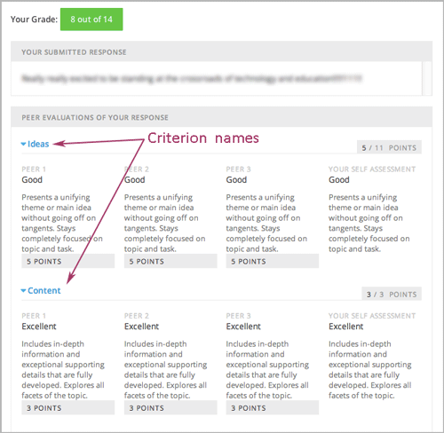
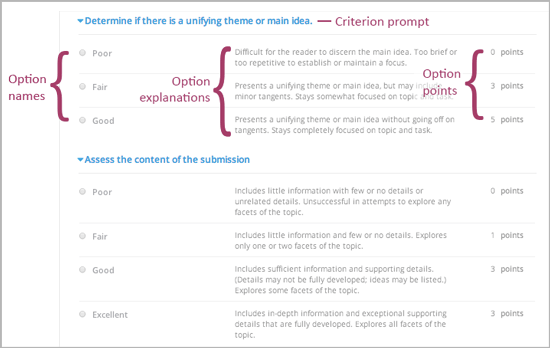
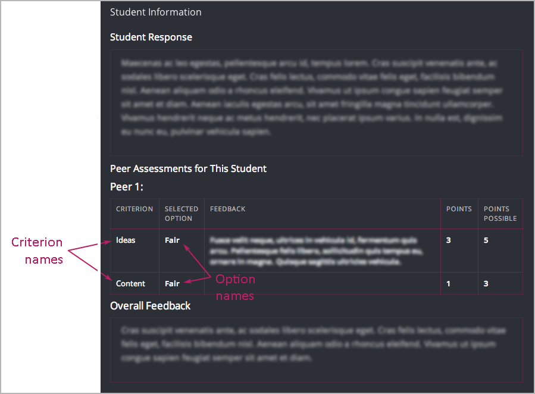
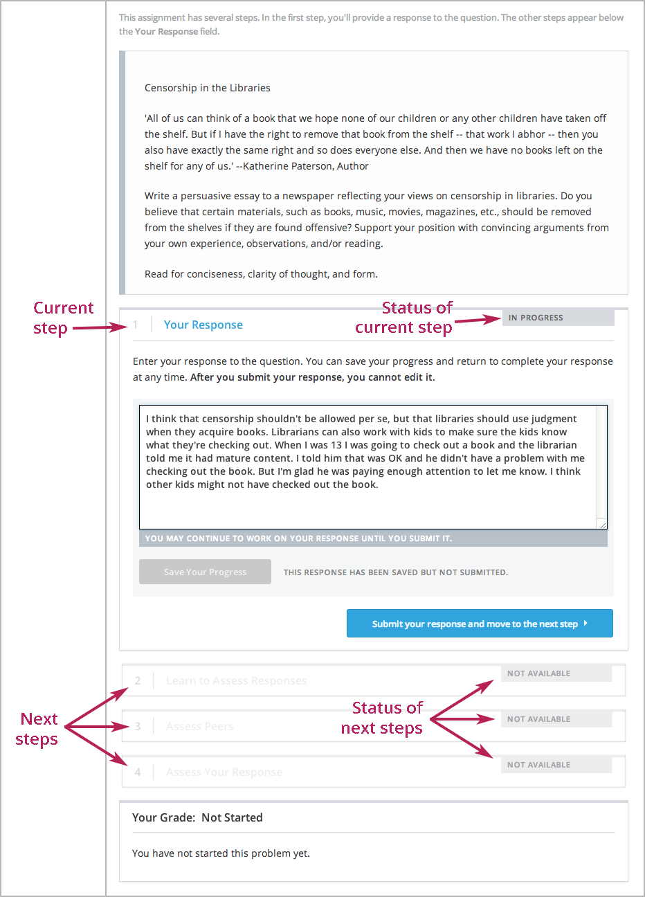
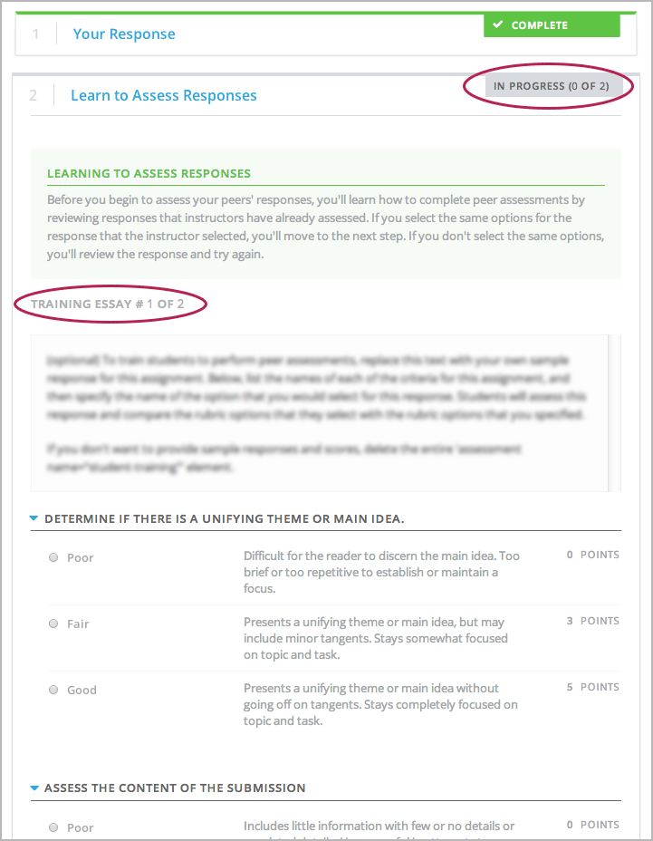
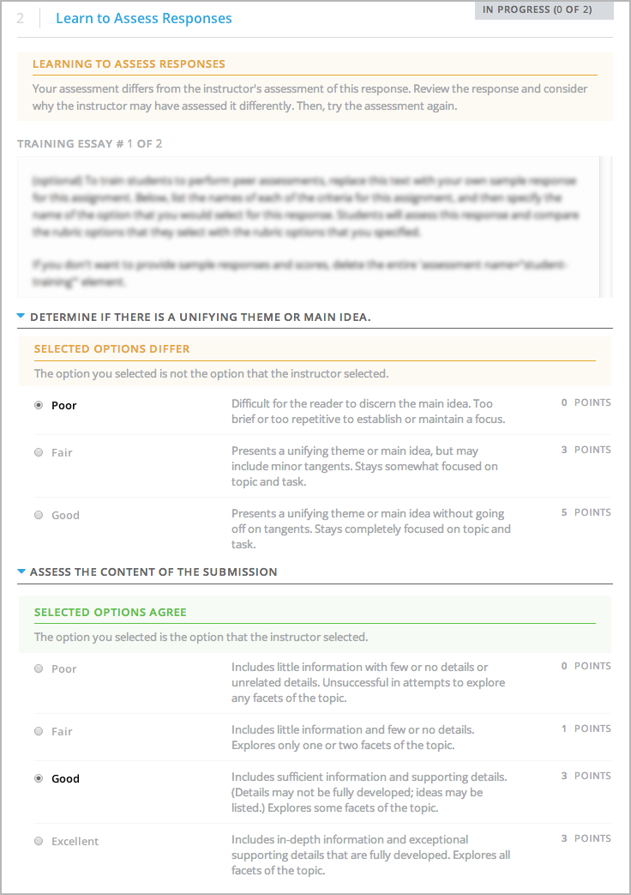
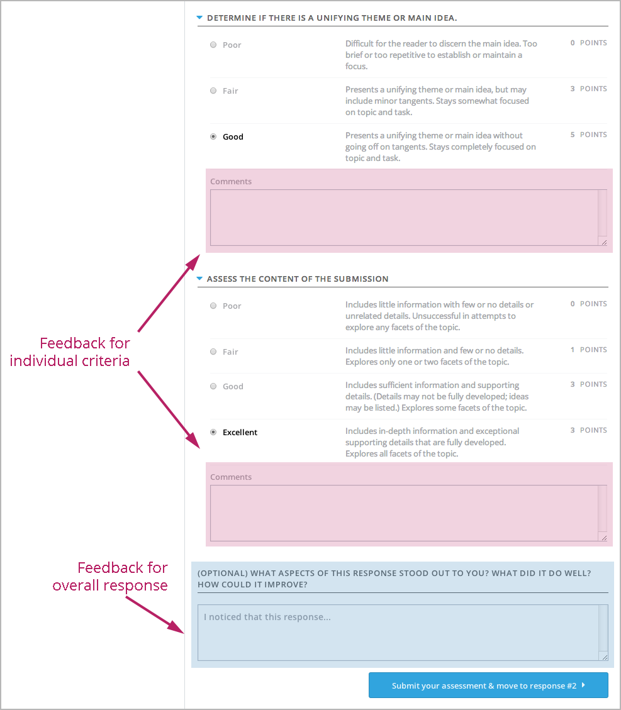
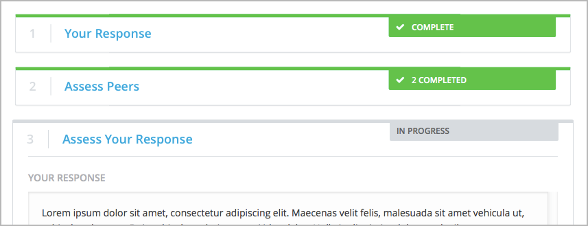
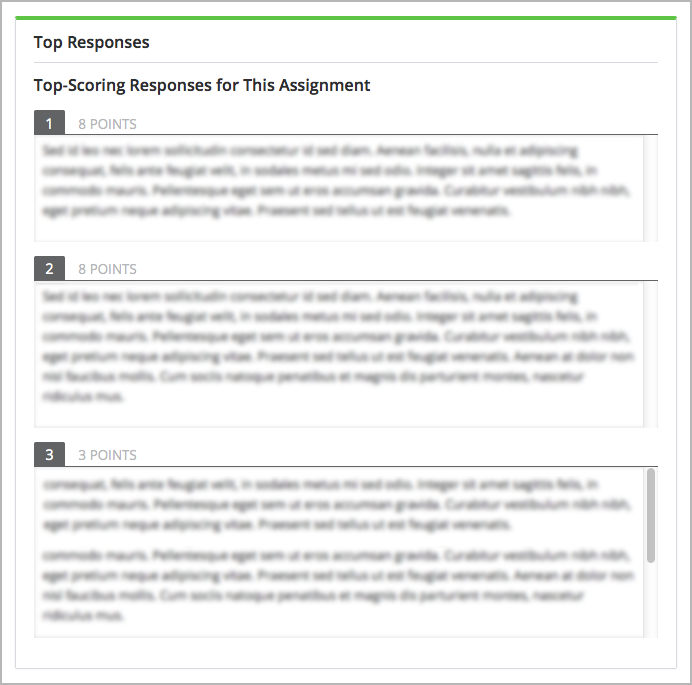

6.25.1. Open Response Assessments¶
6.25.1.1. Introduction to Open Response Assessments¶
Open response assessments allow instructors to assign questions that might not have definite answers, such as text responses or short essays. Students submit responses to questions, then each student and the student’s peers compare the responses to a rubric that you create. You can also allow students to upload an image to accompany a text response.
Open response assessments include peer assessments and self assessments. In peer assessments, students compare their peers’ responses to a rubric that you create. In self assessments, students compare their own responses to the rubric.
In open response assessments, students usually only see their own responses and any peer responses they assess. You can also allow students to see the top- scoring responses that their peers have submitted. For more information, see Top Responses.
Note
Open response assessments that are visible to all students do not respect cohorts. In other words, it is possible for students in one cohort to be asked to grade responses for students in another cohort. If you want to make an open response assessment divided by cohort, you must create that assessment in a course component that is defined as cohort-specific. For more information about cohorts and creating cohort-specific courseware, see 使用队列功能建立课程群 and 创建特定队列课件.
For more information about creating open response assessments, including step- by-step instructions, see the following sections.
- Elements of an Open Response Assessment
- Peer Assessment Scoring
- 创建一个开放题回答评估
- Accessing Assignment and Student Metrics
For information about viewing metrics and student responses for released open response assessments, see Accessing Assignment and Student Metrics.
For information about the student experience with open response assessments, see Open Response Assessments in the edX Guide for Students.
6.25.1.1.1. Elements of an Open Response Assessment¶
When you create an open response assessment assignment, you include several elements:
- One or more prompts, or questions.
- The rubric. One rubric is used to grade all the prompts in the assessment.
- One or more assessment steps. Assignments can include a student training step, a peer assessment step, and a self assessment step.
Note
If you include a student training step, you must also include a peer assessment step. The student training step must come first, before the peer and self assessment steps.
For step-by-step instructions for creating an open response assessment, see 创建一个开放题回答评估.
6.25.1.2. Prompts¶
Each prompt, or question, that you want your students to answer, appears near the top of the page, followed by a field where the student enters a response. You can require your students to enter text as a response, or you can allow your students to both enter text and upload an image.
Note
If students upload an image, the image file must be a .jpg or .png file, and it must be smaller than 5 MB in size.
{kind=link}
When you write each question, you can include helpful information for your students, such as what they can expect after they submit responses, or the approximate number of words or sentences that their response should have.
Note
Each student is limited to a total word count of 10,000 for all responses in an ORA assignment.
For more information, see PA Add Prompt.
6.25.1.2.1. Asking Students to Upload Images¶
In open response assessments, you can ask your students to upload an image as part of their response. If you do this, however, keep the following points in mind.
- Currently, you cannot require your students to upload an image. You can only allow it.
- All responses must include some text. Students cannot submit a response that contains only an image.
- Students can submit only one image with each response.
Note
Currently, course teams cannot see any of the images that students submit. Images are not visible in the body of the assignment in the courseware, and they are not included in the course data package.
6.25.1.3. Rubric¶
Your assignment must include a rubric that you design. The same rubric is used for peer and self assessments, and the rubric appears when students begin grading. Students compare their peers’ responses to the rubric.
Rubrics consist of criteria and options.
Each criterion has a name, a prompt, and one or more options.
The name is a very short summary of the criterion, such as “Ideas” or “Content”. Criterion names generally have just one word. Because the system uses criterion names for identification, the name for each criterion must be unique. Criterion names do not appear in the rubric that students see when they are completing peer assessments, but they do appear on the page that shows the student’s final grade.
The prompt is a description of the criterion.
Options describe how well the response satisfies the criterion.
Each option has a name, an explanation, and a point value.

Different criteria in the same assignment can have different numbers of options. For example, in the image above, the first criterion has three options and the second criterion has four options.
Note
You can also include criteria that do not have options, but that do include a field where students can enter feedback. For more information, see PA Criteria Comment Field Only.
You can see both criterion and option names when you access assignment information for an individual student. For more information, see Accessing Assignment and Student Metrics.
{kind=link}
When you create your rubric, decide how many points each option will receive, and make sure that the explanation for each option is as specific as possible. For example, one criterion and set of options may resemble the following.
Criterion
Name: Origins
Prompt: Does this response explain the origins of the Hundred Years’ War? (5 points possible)
Options
| Points | Name | Explanation |
|---|---|---|
| 0 | Not at all | This response does not address the origins of the Hundred Years’ War. |
| 1 | Dynastic disagreement | This response alludes to a dynastic disagreement between England and France, but doesn’t reference Edward III of England and Philip VI of France. |
| 3 | Edward and Philip | This response mentions the dynastic disagreement between Edward III and Philip VI, but doesn’t address the role of Salic law. |
| 5 | Salic law | This response explains the way that Salic law contributed to the dynastic disagreement between Edward III and Philip VI, leading to the Hundred Years’ War. |
For more information about writing effective rubrics, see Heidi Goodrich Andrade’s Understanding Rubrics.
For more information, see PA Add Rubric.
6.25.1.4. Assessment Steps¶
In your assignment, you’ll also specify the assessment steps. You can set the assignment to include a student training step, a peer assessment step, and a self assessment step.
You can see the type and order of the assessments when you look at the assignment. In the following example, after students submit a response, they complete a student training step (“Learn to Assess Responses”), complete peer assessments on other students’ responses (“Assess Peers”), and then complete self assessments (“Assess Your Response”).
{kind=link}
Note
If you include a student training step, you must also include a peer assessment step. The student training step must come before peer and self assessment steps.
6.25.1.4.1. Student Training Step¶
When you create a peer assessment assignment, you can include one or more student training assessments to help students learn to perform their own assessments. A student training assessment contains one or more sample responses that you write, together with the scores that you would give the sample responses. Students review these responses and try to score them the way that you scored them.
Note
If you include a student training step, you must also include a peer assessment step. The student training step must come before peer and self assessment steps.
In a student training assessment, the Learn to Assess Responses step opens immediately after a student submits a response. The student sees one of the sample responses that you created, along with the rubric. The scores that you gave the response do not appear. The student also sees the number of sample responses that he or she will assess.
{kind=link}
The student selects an option for each of the assignment’s criteria, and then clicks Compare your selections with the instructor’s selections. If all of the student’s selections match the instructor’s selections, the next sample response opens automatically.
If any of the student’s selections differs from the instructor’s selections, the student sees the response again, and the following message appears above the response:
Learning to Assess Responses
Your assessment differs from the instructor's assessment of this response. Review the
response and consider why the instructor may have assessed it differently. Then, try
the assessment again.
For each of the criteria, the student sees one of the following two messages, depending on whether the student’s selections matched those of the instructor:
Selected Options Differ
The option you selected is not the option that the instructor selected.
Selected Options Agree
The option you selected is the option that the instructor selected.
For example, the following student chose one correct option and one incorrect option.
{kind=link}
The student continues to try scoring the sample response until the student’s scoring for all criteria matches the instructor’s scoring.
For more information, see PA Student Training Step.
6.25.1.4.2. Peer Assessment Step¶
In the peer assessment step, students review other students’ responses. For each response, they select an option for each criterion in your rubric based on the response. Students can also provide text feedback, or comments, on each response.
6.25.1.5. Number of Responses and Assessments¶
When you specify a peer assessment step, you specify the number of responses that each student has to assess and the number of peer assessments that each response has to receive.
Note
Because some students might submit a response without completing any peer assessments, some responses might not receive the required number of assessments. To increase the chance that all responses receive a sufficient number of assessments, you must set the number of responses that students must assess to be higher than the number of assessments that each response must undergo. For example, if you require each response to receive three assessments, you could require each student to assess five responses.
If all responses have received assessments, but some students have not completed the required number of peer assessments, those students can assess responses that other students have already assessed. The student who submitted the response sees the additional peer assessments when he sees his score. However, the additional peer assessments do not count toward the score that the response receives.
6.25.1.6. Feedback Options¶
By default, students see a single comment field below the entire rubric. You can also add a comment field to an individual criterion or to several individual criteria. This comment field can contain up to 300 characters.
The comment field appears below the options for the criterion. In the following image, both criteria have a comment field. There is also a field for overall comments on the response.
{kind=link}
For more information, see PA Add Rubric and PA Criteria Comment Field Only.
6.25.1.7. Peer Assessment Scoring¶
Peer assessments are scored by criteria. An individual criterion’s score is the median of the scores that each peer assessor gave that criterion. For example, if the Ideas criterion in a peer assessment receives a 10 from one student, a 7 from a second student, and an 8 from a third student, the Ideas criterion’s score is 8.
A student’s final score for a peer assessment is the sum of the median scores for each individual criterion.
For example, a response may receive the following scores from peer assessors:
| Criterion Name | Peer 1 | Peer 2 | Peer 3 | Median |
|---|---|---|---|---|
| Ideas (out of 10) | 10 | 7 | 8 | 8 |
| Content (out of 10) | 7 | 9 | 8 | 8 |
| Grammar (out of 5) | 4 | 4 | 5 | 4 |
To calculate the final score, add the median scores for each criterion:
Ideas median (8/10) + Content median (8/10) + Grammar median (4/5) = final score (20/25)
Note
Remember that final scores are calculated by criteria, not by individual assessor. Therefore, the score for the response is not the median of the scores that each individual peer assessor gave the response.
For information on grades for student submissions that you have cancelled and removed from peer assessment, refer to Remove a Student Response from Peer Grading.
6.25.1.8. Assessing Additional Responses¶
Students can assess more than the required number of responses. After a student completes the peer assessment step, the step “collapses” so that just the Assess Peers heading is visible.
{kind=link}
If the student clicks the Assess Peers heading, the step expands. The student can then click Continue Assessing Peers.

6.25.1.8.1. Self Assessment Step¶
In self assessments, the student sees his response followed by your rubric. As with peer assessments, the student compares the rubric to his response and selects an option for each of the criteria.
If you include both peer and self assessments, we recommend that you include the peer assessment before the self assessment.
6.25.1.9. Top Responses¶
You can include a Top Responses section that shows the top-scoring responses that students have submitted for the assignment, along with the scores for those responses. The Top Responses section appears below the student’s score information after the student finishes every step in the assignment.
{kind=link}
You can allow the Top Responses section to show between 1 and 100 responses. Keep in mind, however, that each response might be up to 300 pixels in height in the list. (For longer responses, students can scroll to see the entire response.) We recommend that you specify 20 or fewer responses to prevent the page from becoming too long.
Note
It may take up to an hour for a high-scoring response to appear in the Top Responses list.
If a high-scoring response is removed from peer assessment it is also removed from the Top Responses list.
For more information, see PA Show Top Responses.